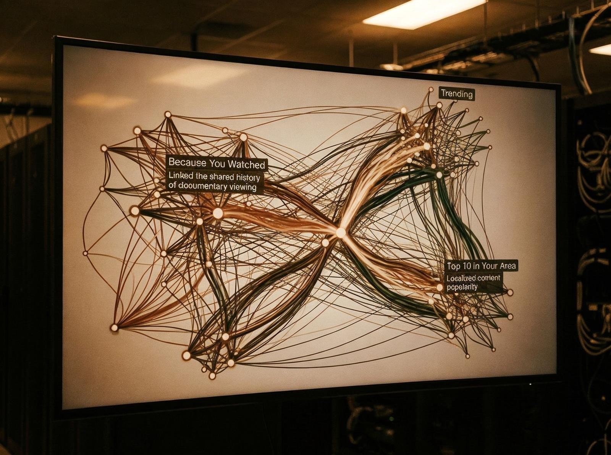

Înainte de algoritmi, cultura era descoperită. Ascultai radio, citeai reviste, primeai recomandări de la prieteni. Era un proces lent, personal, organic.
Azi cultura e recomandată. Netflix, Spotify, YouTube — toate folosesc algoritmi pentru a recomanda ce să consumi. Nu mai descoperi cultura, ești condus spre ea.
Și totuși algoritmii nu sunt doar eficiență. Sunt și control. Algoritmii decid ce vezi, ce auzi, ce citești. Nu tu, algoritmul.

Tensiunea centrală a algoritmilor nu e tehnologică, e de putere. Nu e despre cum funcționează AI-ul, e despre cine controlează cultura.
Detaliul care contează e că algoritmii creează o cultură personală, dar și o cultură izolată. Vezi ce vrei să vezi, dar nu vezi ce nu știi că vrei să vezi.
Complicația e că algoritmii sunt criticați — e manipulare, e control, e periculos. Dar criticile nu înțeleg funcția algoritmilor. Nu e despre manipulare, e despre eficiență. Nu e despre control, e despre personalizare. Nu e despre pericol, e despre confort.
Și uite de ce asta nu e superficial. Algoritmii e un simptom al unei schimbări mai mari — de la descoperire la recomandare, de la personal la personalizat, de la organic la automatizat. E un simptom al unei culturi care vrea confort, nu descoperire.
Cultura nu a dispărut, dar s-a schimbat. Nu mai descoperim cultura, e recomandată. Nu mai construim gusturi, e construite pentru noi. Nu mai suntem autonomi, suntem conduși.
Algoritmii nu sunt doar AI, sunt control. Nu sunt doar recomandare, sunt decizie. Nu sunt doar eficiență, sunt putere.